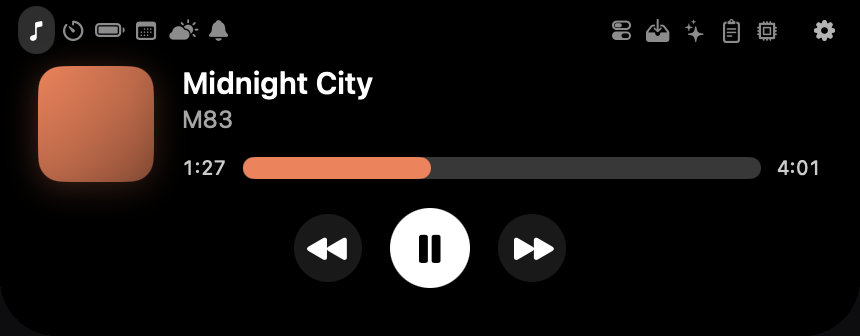
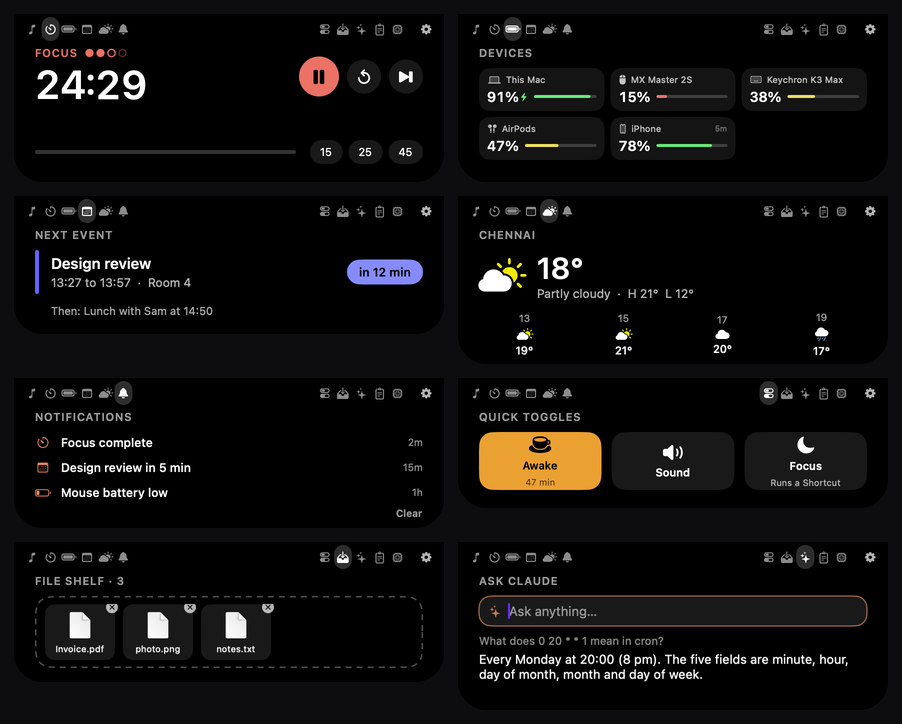

Your notch, finally useful.
Nimbus turns the notch into a small, smart island. See what's playing, run a Pomodoro, check your next meeting and every battery you own, all by moving your mouse to the top of the screen.
Version 0.1 · macOS 14 or later · Apple silicon (M1 and newer) · about 1 MB

The real thing, hanging from the notch.
Eleven widgets. One tiny space.
Hover the notch to open it. The icons on either side switch widgets, and so does a two-finger swipe.

Now playing
Apple Music and Spotify. Album art, controls, and a progress bar you can drag.
Pomodoro
Focus and break cycles. Drag the time to set it, and it stays in the notch while it runs.
All your batteries
Your Mac, keyboard, mouse, AirPods, and your iPhone or iPad. Warns you when one runs low.
Calendar
Your next event with a countdown, in the notch for the last 15 minutes before it starts.
Weather
Current conditions and the next hours. No account, no key. Only the city name is sent.
Ask Claude
Type a question, watch the answer stream in. Uses your own Anthropic key.
File shelf
Drop a file on the notch to park it. Drag it out when you need it.
Clipboard and more
The last three things you copied, system stats, keep-awake and mute. Some are off until you want them.
Make it yours.
Everything about how Nimbus looks and moves is a slider away, and you can share your setup as a file.
- Four themes and your own colours: solid, gradient, glass or tinted by the album art.
- Size and position of the notch, the compact view and the open island.
- Five open-and-close animations (Classic, Drop, Pop, Elastic, Dissolve), with a Replay button.
- Turn widgets on or off. Off means off: nothing keeps running.
- Respects Reduce Motion in macOS, and opens at login if you want.
Install it in four steps.
No Terminal, no coding. It takes about a minute.
- Download and open the zip.Click Download for Mac, then double-click the file in your Downloads folder.
- Drag Nimbus into Applications.Then double-click it. macOS will say it can't verify the app. Click Done.
- Allow it once.Open Apple menu → System Settings → Privacy & Security, scroll down, and click Open Anyway next to "Nimbus was blocked". Enter your password.
- Open it again and click Open.That's it. Nimbus has no Dock icon: look for its icon at the top right of your menu bar, and move your mouse over the notch.
xattr -dr com.apple.quarantine /Applications/Nimbus.appYour iPhone, in your notch.
Apple doesn't let a Mac read an iPhone's battery, so Nimbus uses Shortcuts. Switch it on in Settings, add the shortcuts Nimbus makes for you, and you're connected over your own Wi-Fi. No account, no cloud.
- See your iPhone and iPad battery next to your Mac's.
- Start a Pomodoro on your Mac from your phone.
- Show a phone timer in the notch, and get a banner when it ends.
- Off until you switch it on. Every request needs a private token, and only a short fixed list of things is allowed.
Private by design.
No tracking
No analytics, no accounts, no servers of ours.
Only two network calls
Weather sends the city you typed. Ask Claude sends your question when you press Return.
Keys in your Keychain
Your Anthropic key and the iPhone token are stored in macOS's own secure storage.
Clipboard stays private
History is kept in memory only and skips anything a password manager marks as secret.
Questions
Is it safe?
The whole project is open source under the MIT licence, so anyone can read the code on GitHub. Nimbus only asks for the permissions a feature needs, when you first use it.
Does it work on a Mac without a notch?
Yes. It draws a small pill at the top of the screen instead. It looks best on a notched MacBook.
Does it work on Intel Macs?
Not yet. This first version is built for Macs with Apple silicon (M1 and newer).
Which music apps does it support?
Apple Music and Spotify. macOS doesn't let other apps share what they're playing.
Can it show my iPhone's notifications?
No. macOS has no way to read other apps' notifications. Nimbus shows its own alerts: calendar reminders, finished timers and low batteries.
How do I uninstall it?
Click the Nimbus icon in the menu bar and choose Quit, then drag Nimbus out of Applications into the Trash. If you set it to open at login, switch that off in Settings first.
How do I get updates?
Download the newest zip from the same link and replace the old app. Nimbus can't update itself yet.